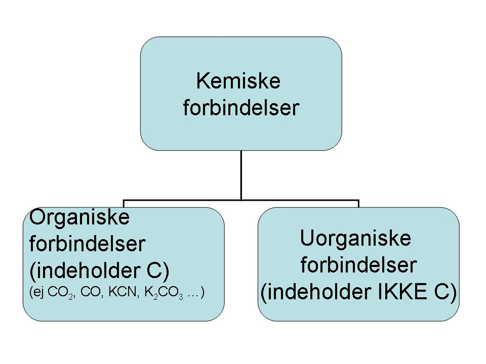
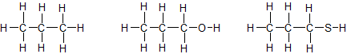
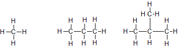
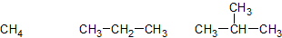
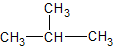
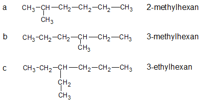
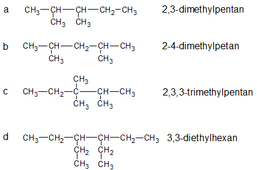
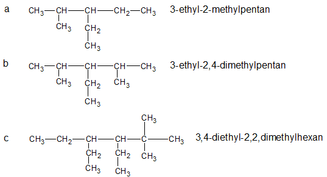

Formålet med dette kapitel er:
Man kender i dag flere millioner kemiske stoffer. For at bevare overblikket over dem, er man nødt til at kategorisere dem. Det viser sig, at en meget stor del af de kendte kemiske forbindelser (95 %) indeholder carbon. Der er altså noget specielt ved carbon, siden det indgår i så mange kemiske forbindelser. Kemiske forbindelser der indeholder carbon, kalder vi organiske forbindelser. Forbindelser der ikke indeholder carbon kalder vi for uorganiske forbindelser. Bemærk at navnet har historisk oprindelse, organiske forbindelser stammer ikke nødvendigvis fra noget levende. Den moderne definition på en organisk forbindelse er altså blot at den indeholder carbon.
Der er dog en række kemiske forbindelser man af historiske årsager regner for uorganiske, selvom de indeholder carbon, det gælder bl.a. CO2, CO og salte der indeholder CN- og CO32- (fx KCN og Na2CO3).

Hvad der gør carbon specielt, er at det danner fire bindinger og derfor kan danne lange kæder, dette giver anledning til utallige kombinationsmuligheder, se figur 10.2 for eksempler. Næsten alle organiske forbindelser indeholder hydrogen (H) og mange indeholder oxygen (O). Phosphor (P) og svovl (S) er andre grundstoffer der ofte indgår i organiske forbindelser.

De organiske stoffer kan inddeles yderligere. Carbonhydrider er stoffer der kun indeholder carbon (C) og hydrogen (H). Eksempler på carbonhydrider er CH4, C2H6 og C2H4, mens fx CH4O ikke er et carbonhydrid (da den indeholder O).
Carbonhydrider der kun indeholder enkeltbindinger (ikke dobbelt- eller trippelbindinger), kaldes for alkaner. Med andre ord er alkaner forbindelser der kun indeholder carbon og hydrogen og kun har enkeltbindinger. Nogle eksempler på alkaner, er vist i figur 10.3.

Som det ses, kan strukturformler for alkaner let blive uoverskuelige. Derfor benytter man ofte sammentrukne strukturformler hvor man ikke tegner bindinger til alle H'erne, se figur 10.4. Bemærk at alkanerne er de samme som på figur 10.3.

Olie og naturgas er ikke rene stoffer, men en blanding af mange forskellige kemiske forbindelser. Mange af disse forbindelser er alkaner. Alkanerne med få C-atomer (fx CH4 og C2H6) er gasser ved almindelig stuetemperatur, mens alkaner med lange kæder (fx C7H16) er flydende ved stuetemperatur.
Der findes i tusindvis af alkaner. Man må derfor have nogle systematiske navngivningsregler for dem. Vi starter med navngivningen af de 10 første uforgrenede alkaner. Med uforgrenede menes, at alle carbonatomer sidder i en lang kæde efter hinanden. Navnene på disse 10 alkaner fremgår af tabellen nedenfor. Disse navne kan det være fornuftigt at lære udenad. Kan man dem, har man en godt grundlag for navngivning af organiske forbindelser, ikke kun alkaner, men også en lang række andre organiske stofklasser.
| Antal C'er | Molekylformel | Sammentrukken strukturformel | Navn |
|---|---|---|---|
| 1 | CH4 | CH4 | methan |
| 2 | C2H6 | CH3-CH3 | ethan |
| 3 | C3H8 | CH3-CH2-CH3 | propan |
| 4 | C4H10 | CH3-CH2-CH2-CH3 | butan |
| 5 | C5H12 | CH3-CH2-CH2-CH2-CH3 | pentan |
| 6 | C6H14 | CH3-CH2-CH2-CH2-CH2-CH3 | hexan |
| 7 | C7H16 | CH3-CH2-CH2-CH2-CH2-CH2-CH3 | heptan |
| 8 | C8H18 | CH3-CH2-CH2-CH2-CH2-CH2-CH2-CH3 | octan |
| 9 | C9H20 | CH3-CH2-CH2-CH2-CH2-CH2-CH2-CH2-CH3 | nonan |
| 10 | C10H22 | CH3-CH2-CH2-CH2-CH2-CH2-CH2-CH2-CH2-CH3 | decan |
Hvis der er forgreninger på C-kæderne, må vi indføre nogle flere regler. Lad os starte med det simple eksempel på figur 10.5. Vi kan opfatte molekylet som bestående af en hovedkæde med 3 C'er, hvortil der er hæftet en sidekæde bestående af -CH3. Hovedkæden indeholder 3 C'er og får navnet propan. Sidekæden hedder methyl og sidder på C nummer 2 i hovedkæden. Stoffet får navnet 2-methylpropan. Sidekædens navn kommer altså først i navnet. Hvis nummeret er entydigt givet, kan man undlade nummeret; det er altså acceptabelt at kalde 2-methylpropan for blot methylpropan.

Navnene på sidekæderne følger ganske mønsteret for navngivning af uforgrenede alkaner (se tabellen i afsnit 4), blot får sidekæderne endelsen -yl i stedet for -an. De fire første er vist i tabellen nedenfor. Bemærk at sidekæder ikke er selvstændige stoffer, man kan altså ikke have en flaske ethyl i laboratoriet.
| Antal C'er | Formel | Navn |
|---|---|---|
| 1 | -CH3 | methyl |
| 2 | -CH2-CH3 | ethyl |
| 3 | -CH2-CH2-CH3 | propyl |
| 4 | -CH2-CH2-CH2-CH3 | butyl |
Sidekæden skal nummereres så den får lavest muligt nummer, se 10.6b. Navnet bliver altså 3-methylhexan, ikke 4-methylhexan.

Hvis der er flere ens sidekæder, angives antallet med de sædvanlige præfikser (2 = di, 3 = tri, 4 = tetra, 5 = penta, 6 = hexa, 7 = hepta, 8 = octa, 9 = nona, 10 = deca). Samtidigt skal nummeret for hver sidekæde angives. Se figur 10.7 for eksempler.

Hvis der er forskellige sidekæder, skal sidekæderne nævnes alfabetisk, ikke nummererisk. Dog tæller præfikserne (di, tri, tetra, osv.) ikke med. Se figur 10.8.

Bindingerne i alkaner er alle enkeltbindinger mellem carbonatomer (C-C) eller mellem carbon og hydrogen (C-H). Da forskellen i elektronegativitet mellem C og H kun er 0,4, er alle bindinger upolære. Dvs. alkaner er upolære stoffer der har meget lav opløselighed i vand (der er polært).
Alkaner er brændbare. Ved forbrænding forbruges der dioxygen og der dannes vand og carbondioxid. Fx heptan der er en af bestanddelene i benzin:
C7H16(l) + 11O2(g) → 7CO2(g) + 8H2O(g).
Den danske energiforsyning er i høj grad baseret på kul, olie og naturgas. Kul importeres, mens olie og naturgas findes i den danske undergrund. Olie og naturgas består primært af alkaner.
Råolie pumpes op fra undergrunden, enten på land eller til havs (på boreplatforme). Råolie er dannet ud fra smådyr og planter der i meget lang tid har været påvirket af højt tryk. Råolie består mest af alkaner med ret lange carbonkæder. Råolie er en sort, fedtet og tyktflydende væske. Ved behandling af råolien kan man bl.a. fremstille benzin, diesel, petroleum og asfalt.
Naturgas er en fællesbetegnelse for den gas, der findes i undergrunden. Naturgas består primært af methan, men den indeholder også ethan, propan, butan og andre alkaner med længere kulstofkæder. Naturgassens sammensætning og dermed kvalitet varierer meget ved forskellige felter. Generelt er naturgas fra den danske del af Nordsøen karakteriseret ved at have en meget høj kvalitet med omkring 90 % methan.
Naturgas er, som kul og olie, et fossilt brændstof. Afbrænding af naturgas udleder mindre CO2 per energimængde end andre typer fossile brændsler, og naturgas betragtes derfor som det mest klimavenlige fossile brændstof.
Naturgas bliver transporteret over lange afstande gennem internationale rørledninger. Langt hovedparten af Europas naturgasforbrug bliver således produceret i det nordlige Rusland og pumpet tusinder af kilometer frem til forbrugerne i Europa.